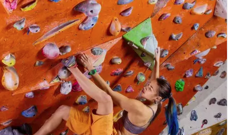

Bouldern
Hauptartikel: Bouldern
Bouldern ist das Klettern an Felsblöcken (engl.: Boulder) in Absprunghöhe. Beim Bouldern liegt der
Schwerpunkt in der Regel bei kürzeren (nicht so hohen), nur wenige Züge langen sogenannten
„(Boulder-)Problemen“, die teilweise schwierige, selbst innerhalb des Kletterns ungewöhnliche
Bewegungsabläufe erfordern.
Eine Seilsicherung ist hierzu nicht notwendig, zur Dämpfung von Stürzen werden Crashpad genannte
Matten verwendet. Zusätzlich zu Crashpads kann die Hilfestellung eines oder mehrerer Sicherungspartner,
Spotter genannt, nötig sein. Der Spotter soll den Kletternden nicht auffangen, sondern lediglich
sicherstellen, dass er sicher auf dem Crashpad landet und sich bei steinigem Gelände nicht verletzt.
Bei stark überhängenden Bouldern sorgt der Spotter dafür, dass der Kletterer im Sturzfall mit den Füßen
voran auf dem Crashpad landet.
Es kann sowohl an Naturfelsen als auch an Kunstwänden gebouldert werden, außerdem ist Bouldern eine
Disziplin des Wettkampfkletterns.
Buildering/Gebäudeklettern
Hauptartikel: Buildering
Aus dem Sportklettern, insbesondere aus dem Bouldern, entwickelte sich eine neue Unterart, das
Gebäudeklettern (englisch buildering).
Es findet – nicht selten illegal[20] – an Fassaden und architektonischen Monumenten statt.
Bekanntester Vertreter dieser Art des Kletterns ist der Franzose Alain Robert, der zudem in der
Regel auch Free Solo klettert.
Eine andere Art von Buildering stellt das legale, abgesicherte Klettern an zu Kletteranlagen umgewidmeten
Gebäuden dar, wie dies zum Beispiel an einem ehemaligen Luftschutzbunker in Berlin praktiziert wird.